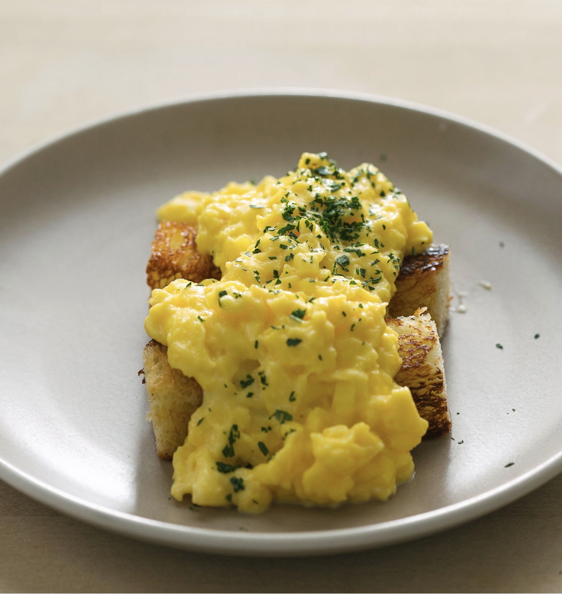

Scrambled Eggs

This is a French Style Scrambled Eggs Recipe. This recipe originates from Thomas Keller a 3 Michelin Star Chef from the United States
Ingredients
4 eggs
Brioche toast, cut into soldiers
Butter
Crème fraiche
Parsley, Minced
Kosher Salt
Maldon Salt
- Set saucier over low heat. Add 3 tablespoons (approximate- ly 48 grams) of butter to the saucier and pour in the eggs
- Begin whisking slowly and continuously to emulsify in the butter and to gently cook the eggs
- As eggs are still semi-liq- uid but are beginning to resemble porridge, turn off the heat
- Look for small curds beginning to pull away from the bottom and sides of the saucier
- Whisk in about 1⁄2 table- spoon of butter, 1 tablespoon of crème fraiche, and parsley, adjusting to your preference for richness and consistency
- Spoon the eggs into a serving bowl, finish with Maldon salt, and serve with brioche toasts.